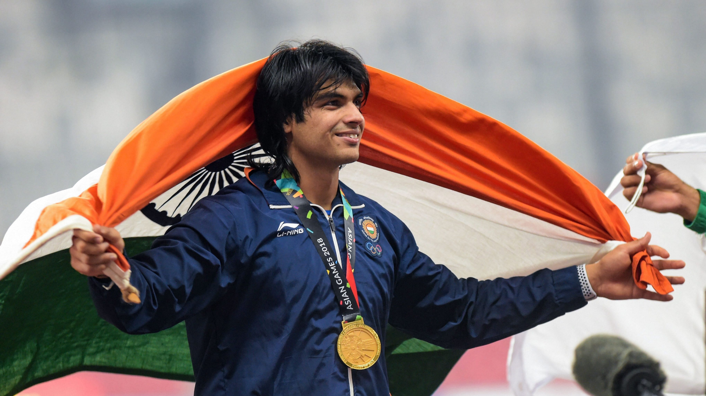

An Indian track and field athlete who competes in the javelin throw
As of August 2021, he is ranked second internationally by World Athletics. A Junior Commissioned Officer (JCO) in the Indian Army, Chopra is the first track and field athlete to win a gold medal for India at the Olympics.He is also the first track and field athlete from India to win at the IAAF World U20 Championships, where in 2016 he achieved a world under-20 record throw of 86.48 m, becoming the first Indian athlete to set a world record.

The following list is achievements of Neeraj
2013 - World Youth Championship-19th position (66.75m).
2015 - Asian Championship-9th position (70.50)
2016 -2016 South Asian Games-1st Position (82.23m)
2016 -Asian Junior Championships-2nd Position (77.60m)